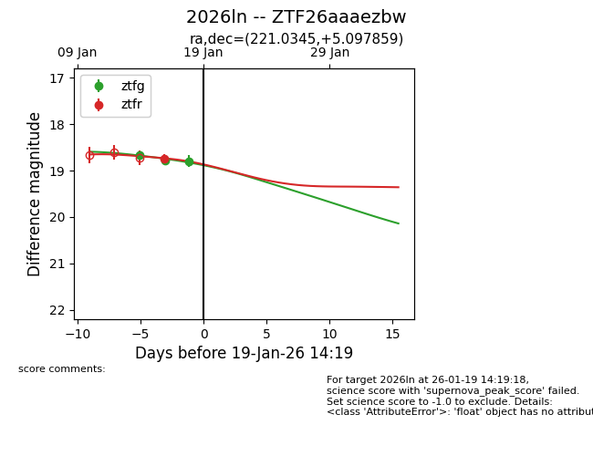
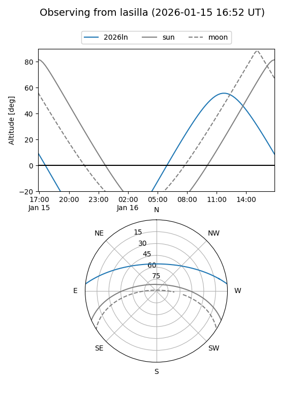
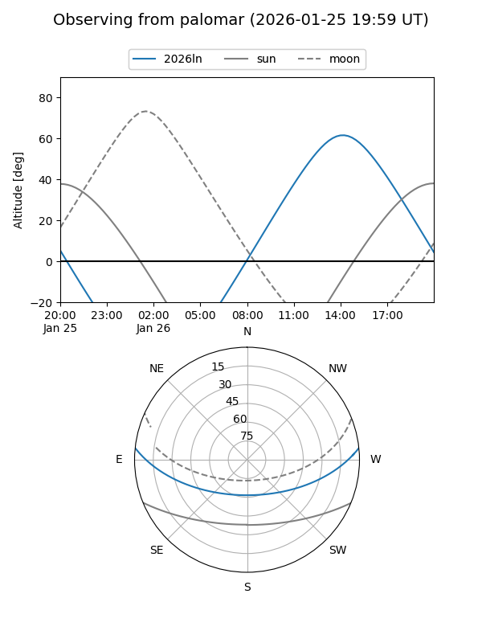
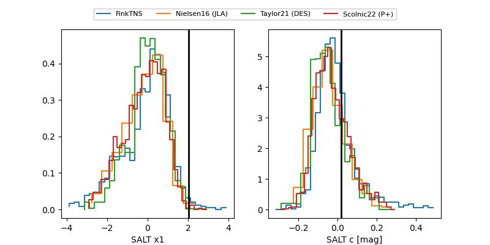

2026ln
Target 2026ln at 2026-01-21 15:06
Aliases and brokers:
FINK: link
Lasair: link
ALeRCE: link
TNS: link
YSE: link
alt names
ZTF26aaaezbw (ztf,fink_ztf)
2026ln (tns,yse)
Coordinates:
equatorial (ra, dec) = 221.0345,+5.09786
equatorial (HMS+DMS) = 14:44:08.29,+05:05:52.29
galactic (l, b) = (358.5932,+55.28013)
Flags:
Photometry:
last ztfg=18.94, ztfr=18.90
4 ztfg, 2 ztfr detections
Lightcurve

Visibility


Additional plots
